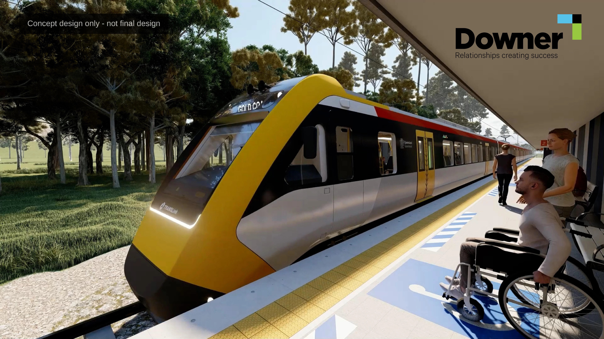
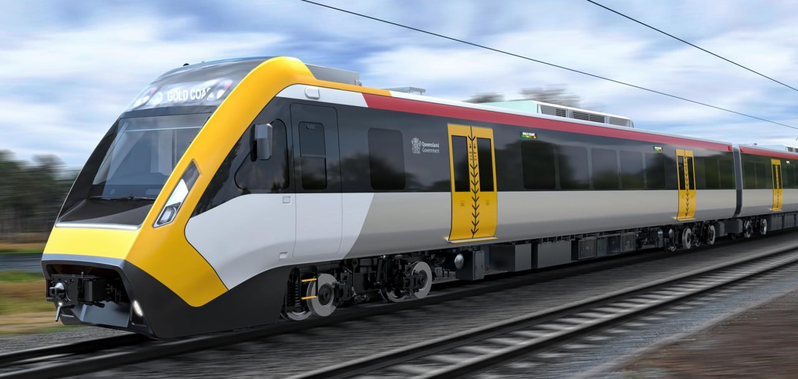

QTMP / NNGR (Queensland Train Manufacturing Program / New NGR)¶
This page is under construction!! Check out QTMP on TMR's Website.
The QTMP is a $9.5 billion program funded by the Queensland Government to design, build, and maintain 65 new trains for the SEQ network. The program also includes the construction of a purpose-built manufacturing faciltiy in the Fraser Coast region, as well as a new rail faciltiy in Ormeau for train maintenance and stabling.
QTMP contract has an option for a further 10 but they cant guarantee they will be delivered before the Olympics, only the 65 already contracted.
Source: https://www.reddit.com/r/BrisbaneTrains/comments/1h74d2a/comment/m0iwxv1
QTMP will have a "remote startup" capability that enables the train to start and reboot remotely including clearing any fault logs prior to the drivers arrival.
Source: https://www.reddit.com/r/BrisbaneTrains/comments/1hifhrg/comment/m2ymu2u
QTMP trains will have a real-time passenger counting system
QTMP trains will be "the most accessible trains in Australia", with leading technology including train boarding bridges and electronic levelling control to address the horizontal and vertical gaps between platforms and trains. This will allow people using mobility devices and wheelchairs the option to board independently at any door without assistance and use one of the 20 wheelchair allocated spaces located throughout the train[1].
Timeline¶
- October 2020: Funding announced for a new fleet of trains.
- June 2021: Alstom, CAF and Downer announced as shortlisted applicants to deliver Queensland Train Manufacturing Program.
- October 2021: Torbanlea announced as the location of the train manufacturing facility.
- April 2022: Early works commenced for the manufacturing facility.
- Mid-2022: Shortlisted applicants submitted final proposals.
- October 2022: Ormeau announced as the location for the rail facility.
- February 2023: Announcement of Downer as the preferred applicant to deliver Queensland Train Manufacturing Program.
- June 2023: Downer awarded the contract to deliver the Queensland Train Manufacturing Program.
- Late 2023: Site construction works at the manufacturing and rail facilities started.
(Future dates: indicative only)
- Late 2025: Construction of the Torbanlea train manufacturing facility completed and train manufacturing begins.
- Late 2026: The first train is completed and begins testing.
- Late 2026: Ormeau rail facility construction completed.
- Q2 2026: QTMP Scheduled to enter service.
- 2032: All trains expected to be in service.
Gallery¶
 